"Arunachal Pradesh — 'Land of the Dawn-Lit Mountains' — is India's largest and most ecologically diverse northeastern state, defined by massive Himalayan ranges, deep river valleys, and deeply rooted ancient Buddhist and animist traditions."
"अरुणाचल प्रदेश — 'सूर्योदय की पहाड़ियों की भूमि' — पूर्वोत्तर में भारत का सबसे बड़ा और पारिस्थितिक रूप से विविध राज्य है। विशाल हिमालय पर्वतमाला और प्राचीन बौद्ध परंपराओं द्वारा परिभाषित।"
PLACES TO VISIT / घूमने के स्थान
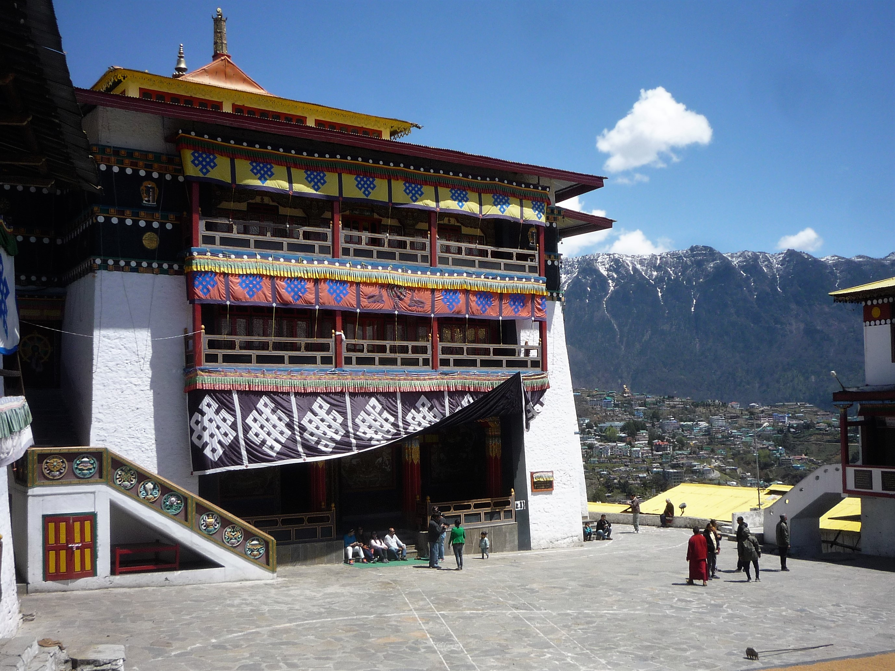


TAWANG MONASTERY
तवांग मठ
The largest Buddhist monastery in India and second largest in the world. Founded in 1680, located at 3,048 m.
भारत का सबसे बड़ा बौद्ध मठ और दुनिया का दूसरा सबसे बड़ा। 1680 में स्थापित, 3,048 मीटर की ऊँचाई पर स्थित।
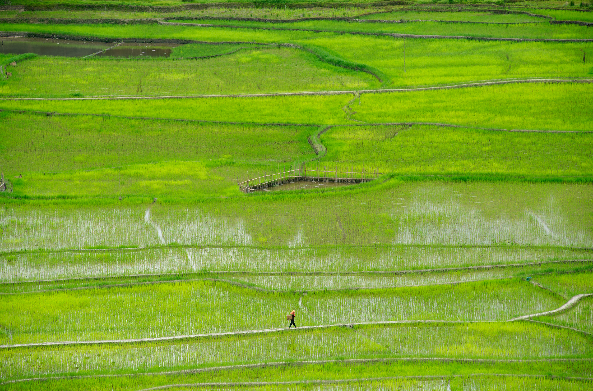
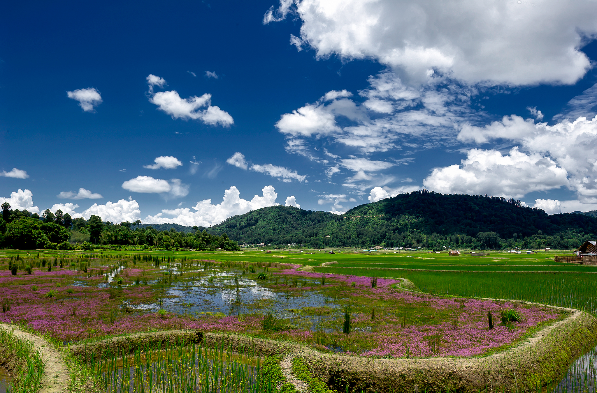
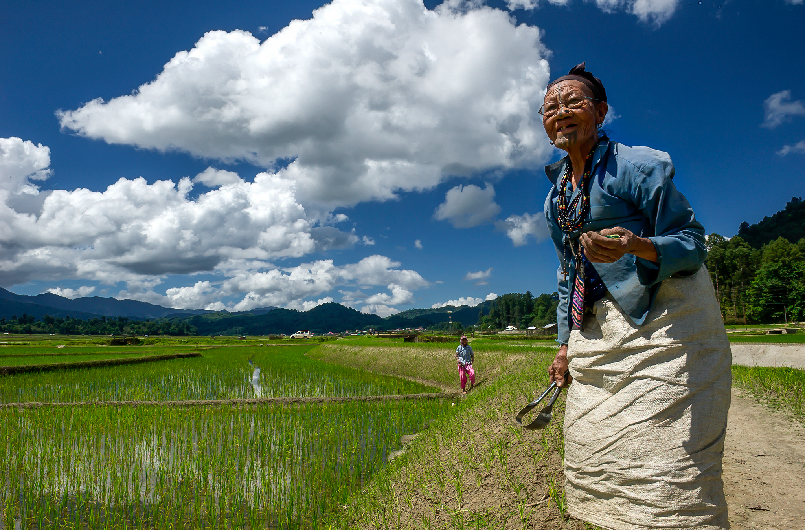
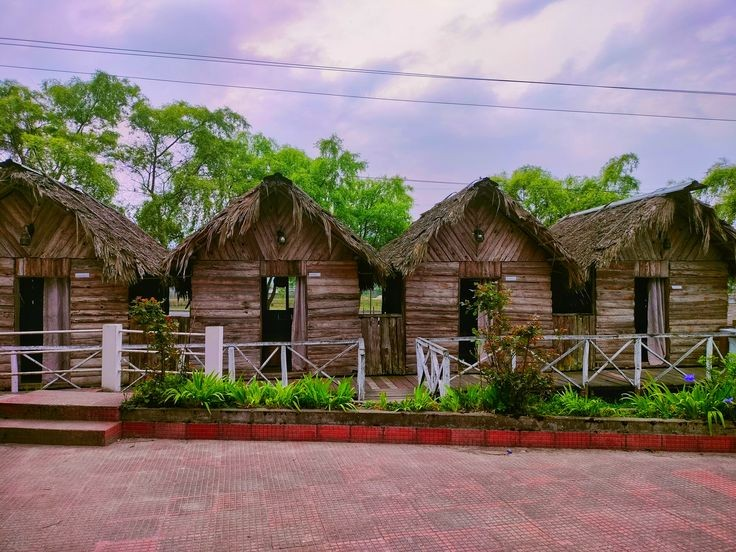
ZIRO VALLEY
ज़ीरो घाटी
Home of the Apatani tribe known for unique wet rice cultivation and facial tattoos. Famous for Ziro Music Festival.
अपातानी जनजाति का घर जो अनूठी चावल की खेती के लिए जाना जाता है। ज़ीरो संगीत समारोह के लिए विश्व प्रसिद्ध।
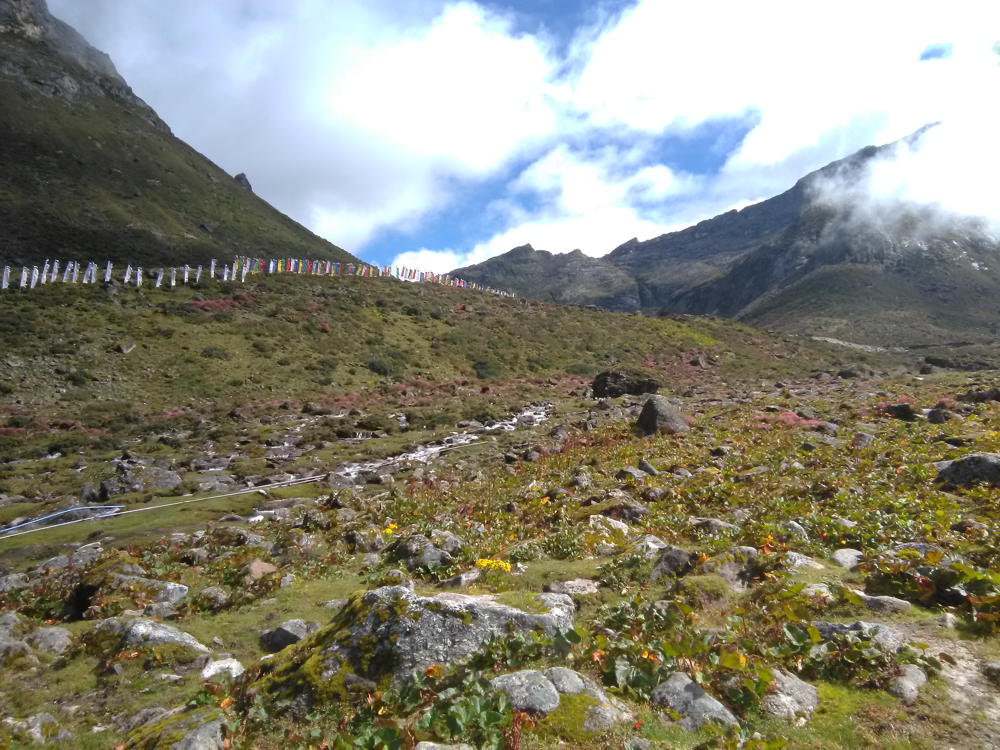
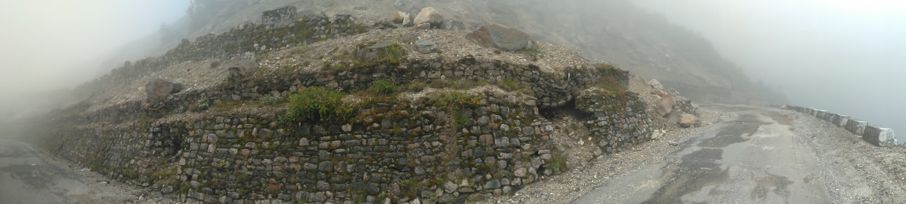
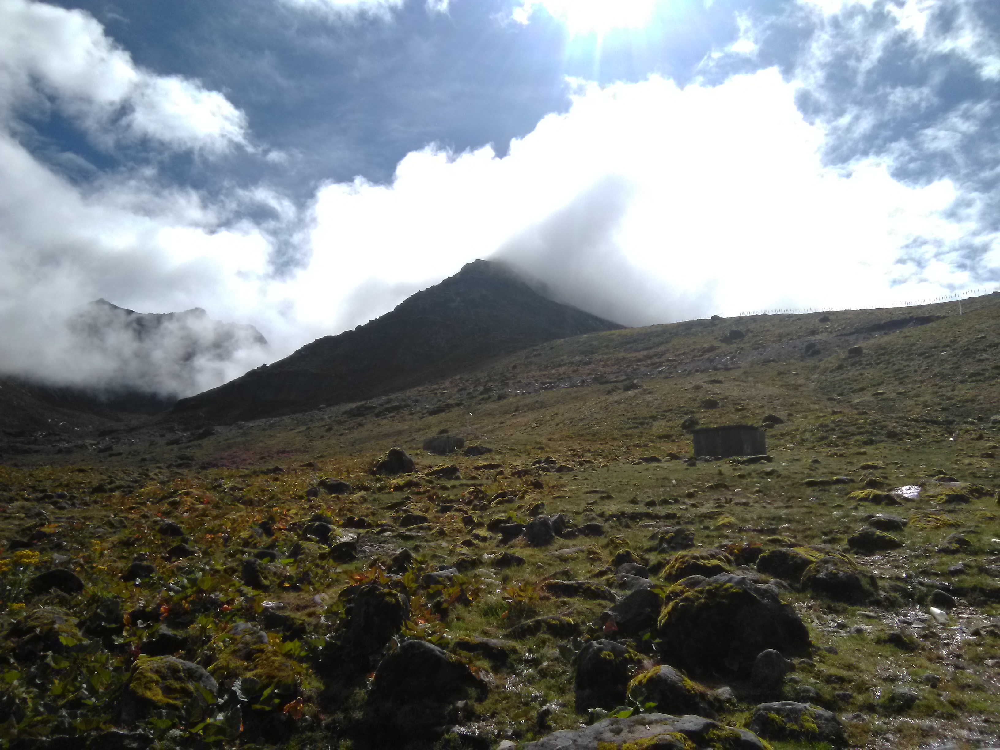
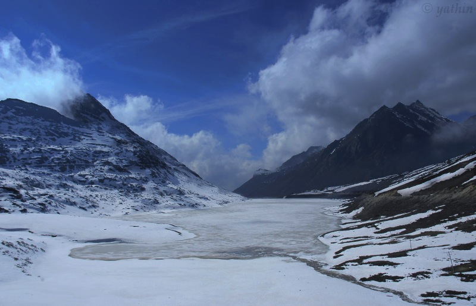
SELA PASS
सेला दर्रा
A high mountain pass at 4,170 m connecting Tawang to the rest of India, featuring a partially frozen lake.
4,170 मीटर पर ऊँचा पर्वत दर्रा जो तवांग को शेष भारत से जोड़ता है। यहाँ आंशिक जमी हुई सेला झील है।
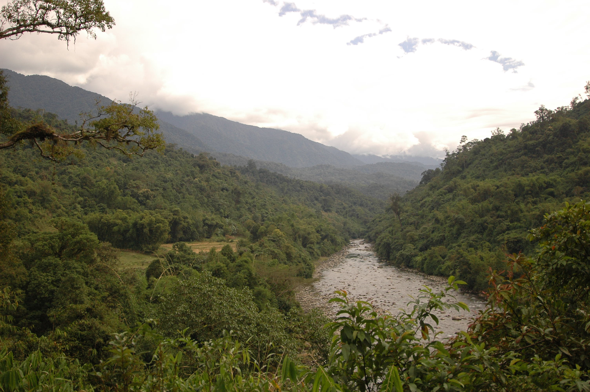
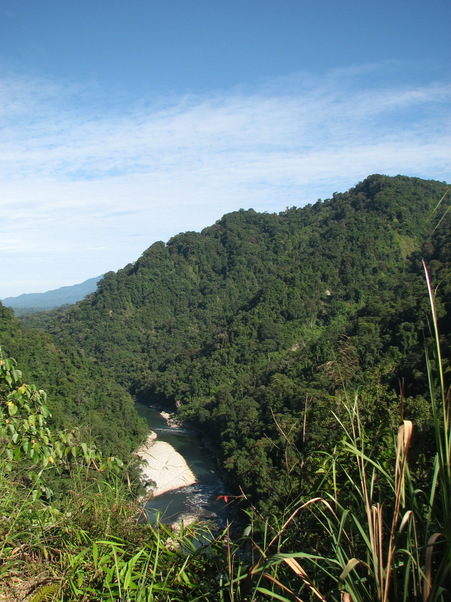
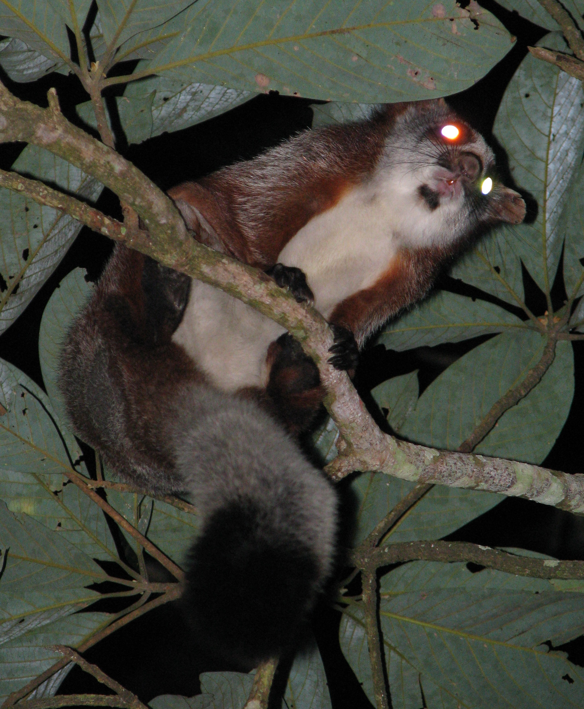
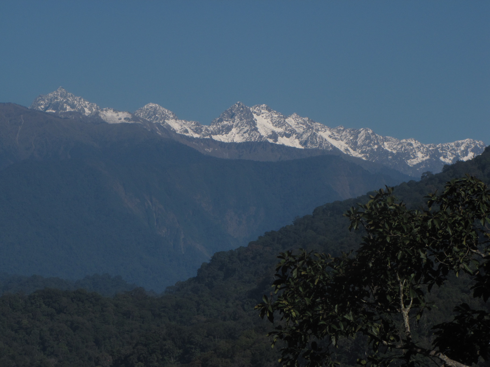
NAMDAPHA NATIONAL PARK
नामदफा राष्ट्रीय उद्यान
India's easternmost tiger reserve. The only park containing four big cat species: tiger, leopard, snow leopard, clouded leopard.
सबसे बड़ा टाइगर रिजर्व जहाँ चार बड़ी बिल्लियाँ (बाघ, तेंदुआ, हिम तेंदुआ और क्लाउडेड तेंदुआ) पाई जाती हैं।
FOOD & CUISINE / भोजन
THUKPA (थुक्पा)
Tibetan-influenced thick noodle soup with yak meat, local vegetables, and aromatic mountain herbs.
याक मांस और जड़ी-बूटियों के साथ गाढ़े गेहूँ के नूडल सूप। सर्द मौसम में गर्माहट देता है।
APONG (अपोंग - Rice Beer)
Traditional rice beer brewed by the Mishing and Adi tribes, traditionally served in large bamboo tubes.
पारंपरिक चावल बीयर जो बाँस की नली में परोसी जाती है। यह उत्सवों का मुख्य पेय है।
SHOPPING / खरीदारी
TRIBAL WOOD CARVINGS
Incredible wooden masks, totems, and figures carved by tribes like the Wancho and Monpa for religious ceremonies.
वंचो और मोनपा जैसी जनजातियों द्वारा धार्मिक समारोहों में उपयोग किए जाने वाले मुखौटे, टोटेम और पशु आकृतियाँ।
THANKA PAINTINGS
Intricate Tibetan Buddhist scroll paintings depicting deities and mandalas, made by monks in Tawang.
देवताओं और धार्मिक कहानियों को दर्शाने वाली बौद्ध स्क्रॉल पेंटिंग, जो तवांग में भिक्षुओं द्वारा बनाई जाती हैं।